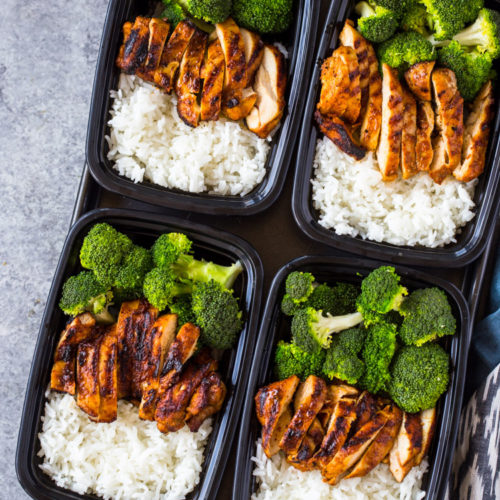

Chicken Rice & Broccoli/h1>

Description
The classic lazy bodybuilder meal! So simple and can be so tasty if done right!
Ingredients
- 2 tbsp Olive Oil
- 1 tsp Chili Powder
- 1 tsp Paprika
- 1/2 tsp Garlic Powder
- Salt & Pepper To Taste
- 500g Chicken Breast
- 1 1/2 cups Long Grain White Rice
- 3 cups Water or Chicken Stock
- 1 Crown of Broccoli
- BBQ Sauce
Steps
- Begin by rinsing the rice until all startch is removed ie. until the water runs clear through the rice. Then add the rice and water to a saucepan and set to high until boiling, then reduce to a simmer and allow to simmer for 20 minutes covered.
- While the rice cooks, preheat your barbeque to medium or about 400degC. While the BBQ preheats, rub the chicken breasts with olive oil then season with chili powder, paprika, garlic powder, salt and pepper.
- Place the chicken breasts on the BBQ and cook 4 minutes, after 4 minutes flip and lather BBQ sauce on the chicken breasts. Allow to cook another 4 minutes, flip and lather the other side with BBQ sauce. Allow the chicken to cook another 2 minutes on each side with the BBQ sauce
- While the chicken and rice are cooking, cut the broccoli into small bite sized pieces and place in a medium pot with approximatley 2 cups of water. Cook for 8 minutes on high
- Once the chicken is done let rest for 5 minutes and the slice into appropriate pieces. Toss the broccoli with garlic power, salt and pepper.
- Top with butter, salt and pepper as needed. Enjoy!
Other Recipes